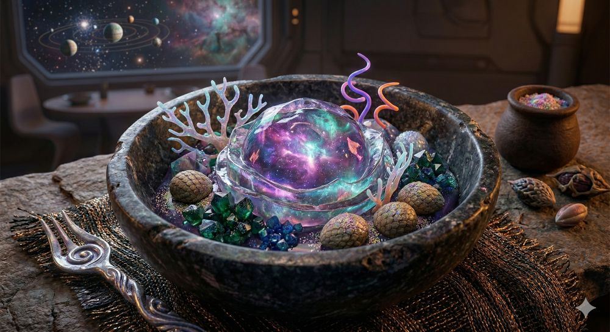

Final Flicker Parfait

Ingredients
- Singularity Dome: A perfectly spherical casing made of crystallized time. It appears translucent with a swirling, neon-nebula core that pulses with the light of dying galaxies.
- 4 Scaled Phoenix Truffles: These are the textured, egg-shaped delights nestled around the center. They are said to be the only thing that survives a supernova, tasting vaguely of burnt caramel and lost memories.
- A Cluster of Emerald Chrono-Crystals: Edible geological formations that grow in the bowl. They provide a sharp, minty crunch that lingers long after the universe has technically ended.
- Extradimensional Coral Filaments: The spindly white and purple structures standing tall in the bowl. These are actually solidified songs, providing a light, airy texture similar to spun sugar but with a rhythmic vibration.
Steps
- Anchoring the Void. Place the Singularity Dome in the center of a heavy obsidian basin. As it settles, it will naturally begin to generate its own gravitational field, pulling the surrounding light into the swirling violet and teal patterns you see within the sphere.
- Arranging the Elements. Carefully position the Scaled Phoenix Truffles and Emerald Chrono-Crystals in the "orbit" of the dome. These must be placed in a specific geometric pattern to ensure the flavors don't accidentally merge into a localized black hole before the first bite.
- Planting the Sound. Gently insert the Coral Filaments into the base of the dish. They should stand upright, vibrating slightly. If you listen closely, you can hear the faint melody of the dessert—a sign that the ingredients are perfectly fresh.
- The Heat Death Drizzle. Just before the customer takes their seat, sprinkle a pinch of shimmering dust from the small side-pot over the entire composition. This acts as a catalyst, causing the steam to rise in elegant ribbons and signaling that the dessert is ready to be consumed while the last of the starlight remains.